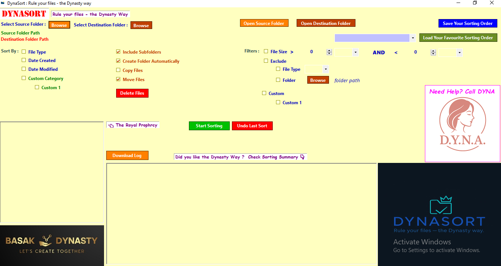

DYNA SORT – File & Folder Sorting App
A VB.NET desktop utility that automatically organizes files and folders based on type, extension, or custom rules, improving desktop and document management efficiency.
Features
- Sort files by type (Documents, Images, Videos, etc.)
- Custom rules for extensions and naming
- Auto-create folders dynamically
- Batch sorting with one click
- Lightweight and fast performance
Screenshots

Technologies Used
VB.NET, Windows Forms, File I/O API
Challenges & Learnings
Faced issues handling file conflicts and ensuring files weren’t duplicated or lost. Learned how to manage file I/O operations safely, implement error handling, and create user-friendly settings for custom rules.